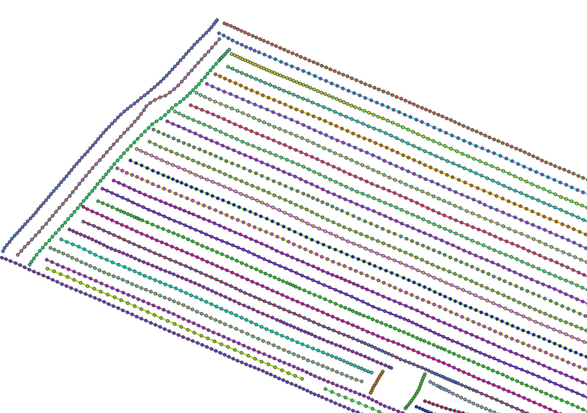
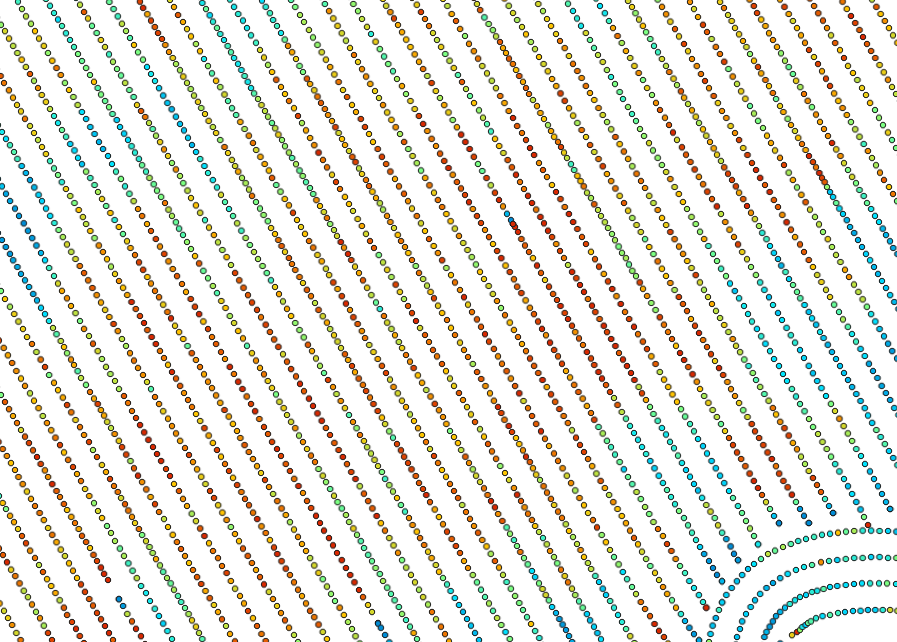
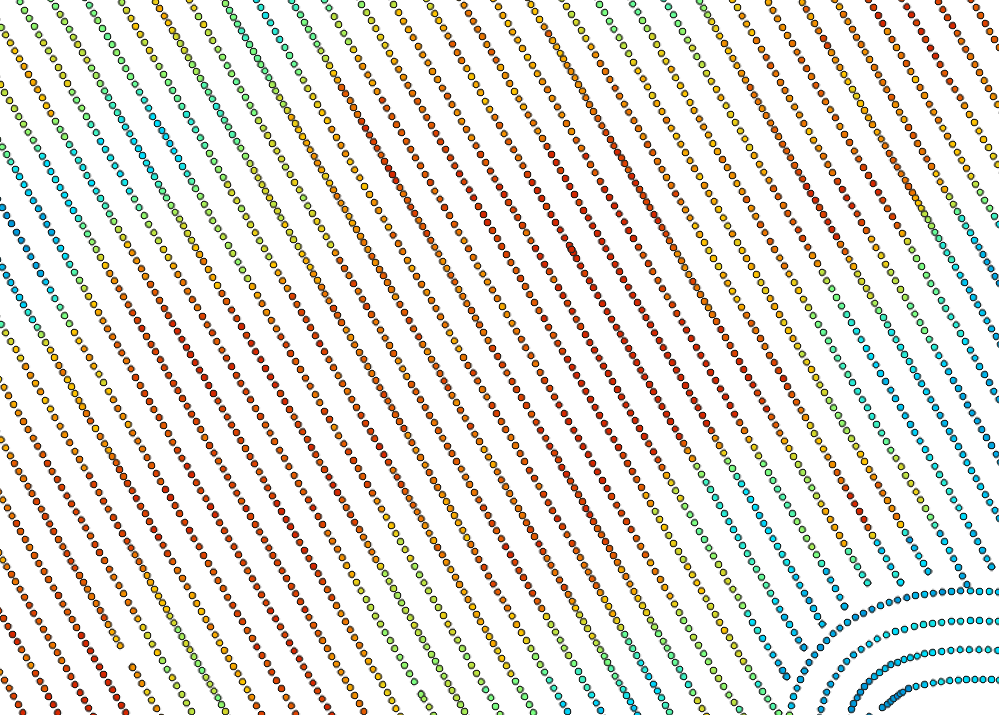
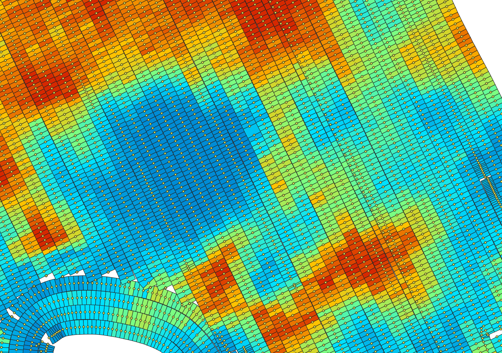

Precision Agriculture
RecreatePassLines
Note this tool is part of a WhiteboxTools extension toolset. Please contact Whitebox Geospatial Inc. for information about purchasing a license activation key (https://www.whiteboxgeo.com).
This tool can be used to approximate the combine harvester swath pass lines from yield points. It is sometimes
the case that either pass-line information is not stored in the point data created during harvesting, or
that this information is lost. The YieldFilter and YieldMap tools however require information about the
associated swath path for each point in the dataset. This tool can therefore serve as a pre-processing
operation before running either of those more advanced mapping tools. It works by examining the geometry of
nearby points and associating points with line features that observe a maximum angular change in direction
(--max_change_in_heading). The tool creates two output vectors, including a pass line vector (--output) and
a points vector (--output_points). The points output contains a PASS_NUM field within its attribute tables
that indicate the unique identifier associated with features. The line vector output contains an AVGYIELD
attribute field, which provides the pass-line average of the input yield values (--yield_field_name).

See Also: YieldFilter, YieldMap
Parameters:
| Flag | Description |
|---|---|
| -i, --input | Name of the input points shapefile |
| -y, --yield_field_name | Name of the attribute containing yield data |
| -o, --output_lines | Name of the output pass lines shapefile |
| --output_points | Name of the output points shapefile |
| -m, --max_change_in_heading | Max change in heading |
Python function:
wbt.recreate_pass_lines(
i,
yield_field_name,
output_lines,
output_points,
max_change_in_heading=25.0,
callback=default_callback
)
Command-line Interface:
>> ./whitebox_tools -r=RecreatePassLines -i=yield_points.shp ^
--yield_field_name='YIELD' -o=filtered_points.shp ^
--max_change_in_heading=25.0
Source code is unavailable due to proprietary license.
Author: Whitebox Geospatial Inc. (c)
Created: 24/05/2021
Last Modified: 24/05/2021
YieldFilter
Note this tool is part of a WhiteboxTools extension toolset. Please contact Whitebox Geospatial Inc. for information about purchasing a license activation key (https://www.whiteboxgeo.com).
This tool can be used to filter the crop yield values associated with point data derived from commerical combine harvester yield monitors. Crop yield data often suffer from high levels of noise do to the nature of how these data are collected. Commercial crop yield monitors on combine haresters are prone to erroneous data for several reasons. Where harvested rows overlap, lower than expected crop yields may be associated with the second overlapping swath because the head of the harvesting equipment is only partially filled. The edges of fields are particularly susceptible to being harvested without a full swath of crop, resulting in anomalous crop yields. The starts of new swaths are also prone to errors, because of the misalignment between the time when the monitor begins recording and the time when grain begins flowing. Sudden changes in harvester speed, either speeing up or slowing down, can also result in anomalous yield measurements.
The YieldFilter tool can smooth yield point patterns, particularly accounting for differences among adjacent
swath lines. The user must specify the name of the input points shapefile (--input), the name of the yield
attribute (--yieldFieldName), the pass number attribute (--passFieldName), the output file (--output), the
swatch width (combine head length, --width), the threshold value (--zScoreThreshold), and optionally, minimum
and maximum yield values (--minYield and --maxYield). If the input vector does not contain a field indicating
a unique identifier associated with each swath pass for points, users may use the RecreatePassLines to estimate
swath line structures within the yield points. The threshold value, measured in standardized z-scores
is used by the tool to determine when a point is replaced by the mean value of nearby points in adjacent swaths.
The following images show before and after examples of applying YieldFilter:


See Also: RecreatePassLines, YieldMap
Parameters:
| Flag | Description |
|---|---|
| -i, --input | Name of the input points shapefile |
| -y, --yield_field_name | Name of the attribute containing yield data |
| -p, --pass_field_name | Name of the attribute containing pass line ID |
| -o, --output | Name of the output points shapefile |
| -w, --width | Pass swath width (m) |
| -z, --z_score_threshold | Z-score threshold value (default=2.5) |
| --min_yield | Minimum yield value in output |
| --max_yield | Maximum yield value in output |
Python function:
wbt.yield_filter(
i,
yield_field_name,
pass_field_name,
output,
width=6.096,
z_score_threshold=2.5,
min_yield=0.0,
max_yield=99999.9,
callback=default_callback
)
Command-line Interface:
>> ./whitebox_tools -r=YieldFilter -i=yield_points.shp ^
--yieldFieldName='YIELD' --passFieldName='PASS_NUM' ^
-o=filtered_points.shp --width=7.0 --zScoreThreshold=3.0 ^
--maxYield=55.0
Source code is unavailable due to proprietary license.
Author: Whitebox Geospatial Inc. (c)
Created: 25/05/2021
Last Modified: 25/05/2021
YieldMap
Note this tool is part of a WhiteboxTools extension toolset. Please contact Whitebox Geospatial Inc. for information about purchasing a license activation key (https://www.whiteboxgeo.com).
This tool can be used to create a segmented-vector polygon yield map from a set of harvester points. The user
must specify the name of the input points shapefile (--input), the pass number attribute (--passFieldName),
the output file (--output), the swatch width (combine head length, --width), and maximum angular change
in direction (--maxChangeInHeading). If the input vector does not contain a field indicating
a unique identifier associated with each swath pass for points, users may use the RecreatePassLines to estimate
swath line structures within the yield points.

See Also: RecreatePassLines, YieldFilter
Parameters:
| Flag | Description |
|---|---|
| -i, --input | Name of the input points shapefile |
| -p, --pass_field_name | Name of the attribute containing pass line ID |
| -o, --output | Name of the output polygon shapefile |
| -w, --width | Pass swath width (m) |
| -m, --max_change_in_heading | Max change in heading |
Python function:
wbt.yield_map(
i,
pass_field_name,
output,
width=6.096,
max_change_in_heading=25.0,
callback=default_callback
)
Command-line Interface:
>> ./whitebox_tools -r=YieldMap -i=points.shp -p='PASS_NUM' ^
-o=yield_map.shp --width=7.0 --max_change_in_heading=25.0
Source code is unavailable due to proprietary license.
Author: Whitebox Geospatial Inc. (c)
Created: 25/05/2021
Last Modified: 25/05/2021